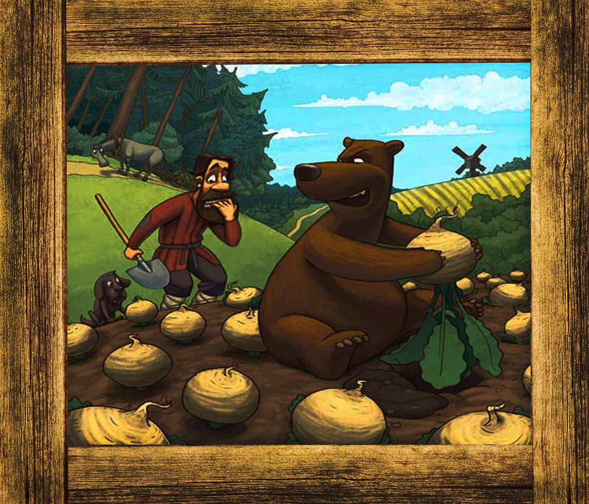

Приступим к теории ловли медведя на казалось бы обыкновенную дачную репу.
Давайте сначала разберемся, что же такое, репа. Репа - однолетнее
или двулетнее травянистое растение, вид
рода Капуста семейства Капустные, или Крестоцветные.
Кормовые сорта репы называются турнепсом. Очень часто встречается в наших краях, как в диком, так и в выращиваемом виде.
У редкой хозяйки на даче не произрастает репа, поэтому именно ее мы и выбрали для ловли медведя. Итак. Давайте непосредственно разберем повадки медведя, относительно репы.

Как вы уже могли понять, медведи очень любят репу, и сразу спешат ее отведать. Однако стоит помнить,
что во время ее поедания они не теряют своего внимания и бдительности.
Что же представляет из себя ловушка? А она представляет из себя ни что иное, как репу с петлей. Корнеплод стоит положить на расстоянии 25 см от петли. Петлю стоит спрятать
в траву и спрятаться самому. Эта нехитрая конструкция поможет вам застать врасплох голодного косолапого.
Theory
Let's proceed to the theory of catching a bear on a seemingly ordinary country dacha.
Let's first figure out what it is, turnip. Turnip - an annual or biennial herbaceous plant, a species of the genus Cabbage of the Cabbage family, or crucifers.
The forage varieties of turnip are called turnips. Very often found in our region, both in wild and in cultivated form. At the rare mistress in a summer residence the turnip does not grow, therefore it we chose for catching a bear. Now. Let's analyze the habits of the bear directly, with respect to turnips.
As you could already understand, bears are very fond of turnips, and immediately rush to try it. However, it is worth remembering that during their eating they do not lose their attention and vigilance. What is a trap? And it is nothing more than a turnip with a loop. Root should be placed at a distance of 25 cm from the loop. The loop is hidden in the grass and hides itself. This simple design will help you catch unaware the hungry clubfoot.